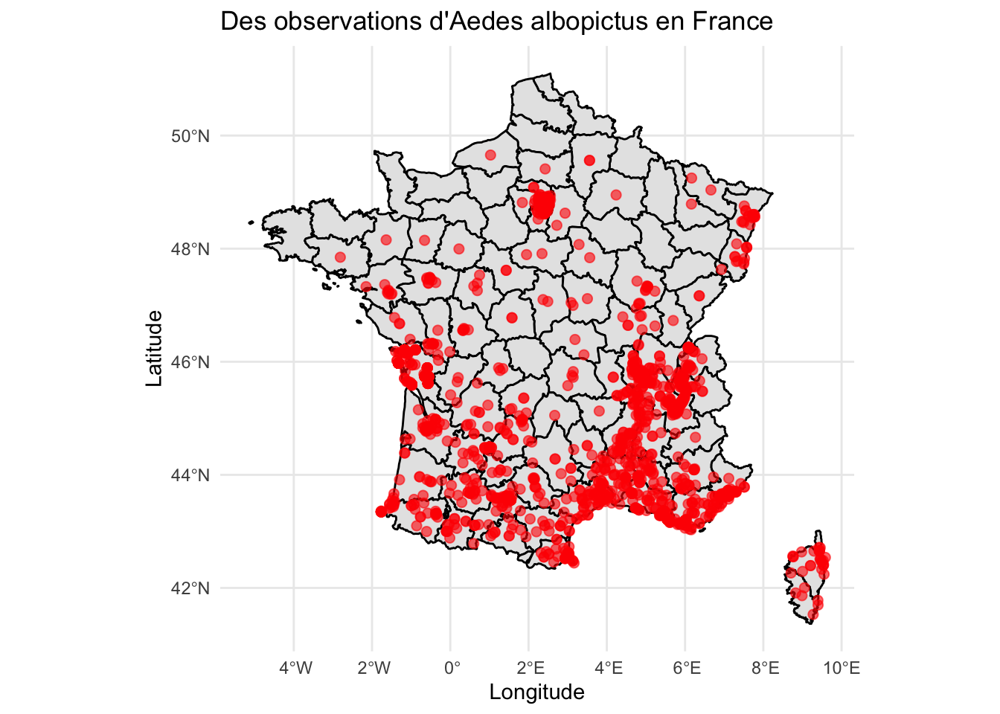
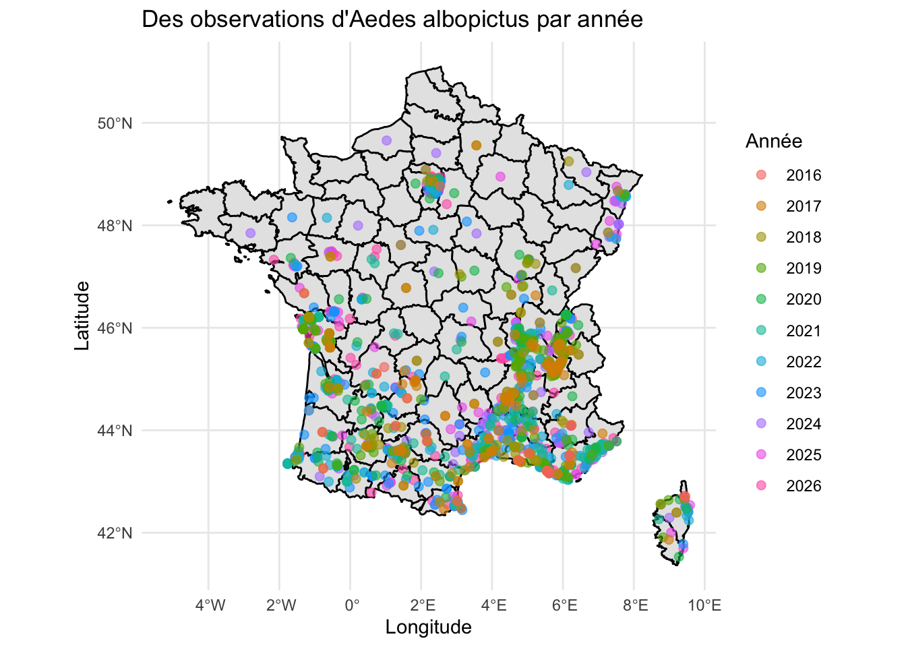
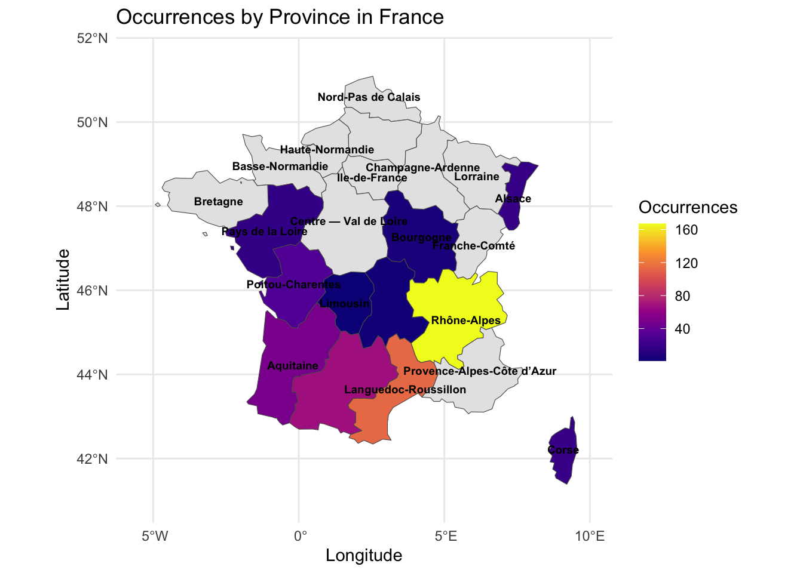

library(sf)library(ggplot2)library(maps)# enlever les lignes qui n'ont pas de coordonne options(repr.plot.width =20, repr.plot.height =12)spatial_data <- tigre_moustique_data %>%filter(!is.na(decimalLatitude), !is.na(decimalLongitude))spatial_sf <-st_as_sf( spatial_data,coords =c("decimalLongitude", "decimalLatitude"),crs =4326# CRS WGS84)france_map <-map_data("france")ggplot() +geom_polygon(data = france_map,aes(x = long, y = lat, group = group),fill ="gray90", color ="black" ) +geom_sf(data = spatial_sf,color ="red",size =2,alpha =0.6 ) +theme_minimal() +labs(title ="Des observations d'Aedes albopictus en France",x ="Longitude",y ="Latitude" )

3.1 Par année
# Par annéeoptions(repr.plot.width =20, repr.plot.height =12)ggplot() +geom_polygon(data = france_map,aes(x = long, y = lat, group = group),fill ="gray90", color ="black" ) +geom_sf(data = spatial_sf,aes(color =factor(year)),size =2,alpha =0.6 ) +theme_minimal() +labs(title ="Des observations d'Aedes albopictus par année",color ="Année",x ="Longitude",y ="Latitude" )

La carte montre une expansion progressive du moustique tigre en France entre 1999 et 2025. Initialement concentrées dans les régions du sud, les observations se sont progressivement étendues vers le nord, atteignant récemment la région parisienne et le nord-est du pays.
Cette progression s’explique en partie par l’augmentation des températures et l’évolution des conditions climatiques, qui favorisent la survie et la reproduction du moustique dans des régions auparavant moins propices à son développement.
3.2 Par site
# Par site df <- summary_tablelibrary(tidyverse)library(giscoR)options(repr.plot.width =20, repr.plot.height =12)# 1.Resume les donnesoccurrence_counts <- df %>%group_by(stateProvince) %>%summarise(n =sum(n_occurrences, na.rm =TRUE))# 2. Prend la cartefrance_map <-gisco_get_nuts(country ="FR",nuts_level =2, resolution ="20")# 3. Ajouter les donnesmap_data <- france_map %>%left_join(occurrence_counts, by =c("NAME_LATN"="stateProvince"))# 4. Plotggplot(data = map_data) +geom_sf(aes(fill = n)) +geom_sf_text(aes(label = NAME_LATN),size =2.5,color ="black",check_overlap =TRUE,fontface ="bold") +scale_fill_viridis_c(option ="plasma",na.value ="grey90",name ="Occurrences") +theme_minimal() +labs(title ="Occurrences by Province in France",x ="Longitude", y ="Latitude") +coord_sf(xlim =c(-5.5, 10), ylim =c(41, 51.5))

La carte met en évidence une forte concentration du moustique tigre dans le sud et le sud-est de la France. La région Rhône-Alpes apparaît comme le principal foyer, suivie par Provence-Alpes-Côte d’Azur et Languedoc-Roussillon.
Les régions de l’ouest et du centre présentent également une présence croissante du moustique, tandis que les régions du nord restent relativement peu touchées. Cette répartition reflète l’expansion progressive de l’espèce depuis les zones les plus favorables sur le plan climatique.